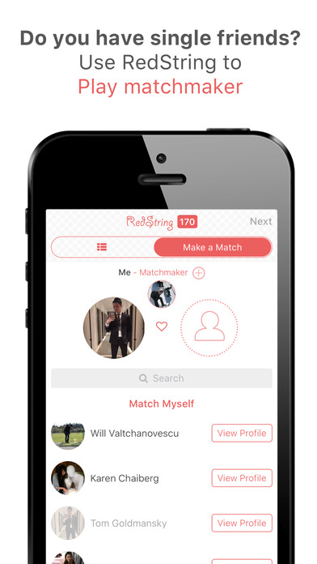
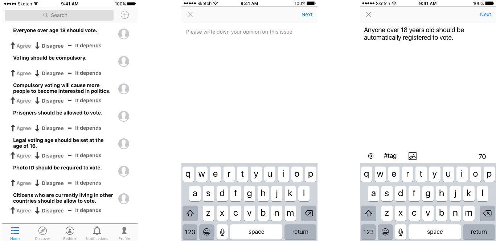
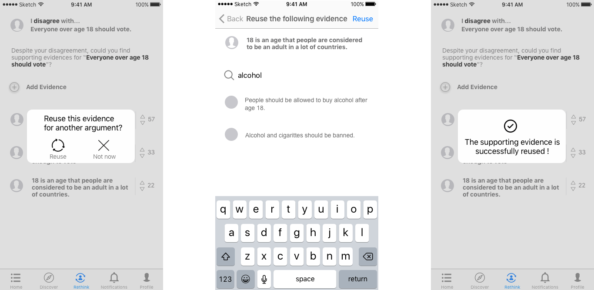

UX Researcher
UX Designer
August 2016 - October 2016
Competitive Analysis
One-on-one Interview
Userbility Testing
Wireframes
Prototyping
Sketch
Our design team cooperated with RedString, a startup that helps people play matchmaker to their single friends, to redesign of their Mobile App experience. It is an on-going 3-month project in its final phase.
To understand our client, we started by talking with the founder and aim to understand
What we found out is that little research was done by the team. THe major problems they want to solve is
To understand the field of dating app,
Compared to other critical thinking apps e.g. Critical Thinking Basic, Think-O-Meter and traditional offline debate training, "Critical Thinking Community" allows students to get exposed to various opinions, share and express opposing ideas on a daily base.
Formal
Informal
Informal
Eassy Writing
Verbal and Collaboration
Writing and Reading
Self-assessment
Professional-assessment
Self and peer-assessment
1 hour per week
A few hours per week
Flexible
To understand how does social media influence students' information explosure and opinion formation
Through interviewing 6 college students on how they use and interact on Twitter and Quora, to understand their behaviors and motivations in their context.
Add an opinion
Choose a topic
Topic added
Rethink and add new evidence
Reuse an evidence
Vote and profile